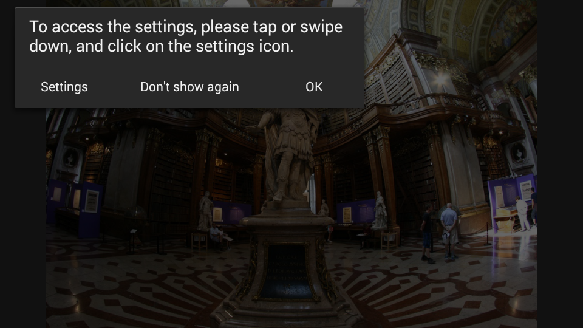
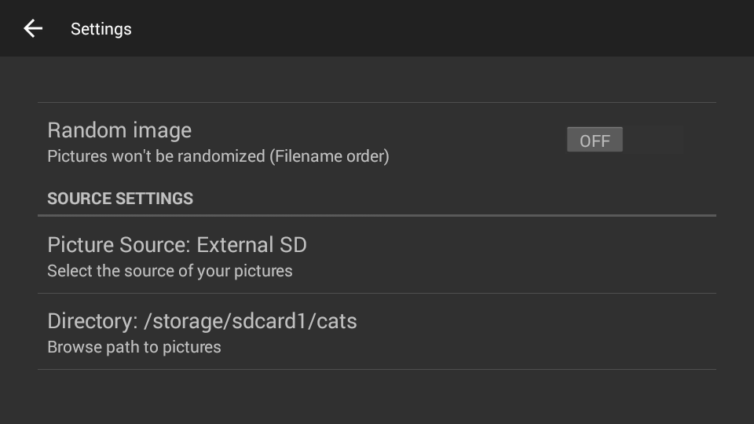

Where to get PicFrame?
App available at:
Source available at:
What is PicFrame?
PicFrame was created with the aim of bringing old, discarded tablets back to life as digital picture frames: put your tablet on the wall, and use PicFrame to watch a slideshow of your photographs.
If your have an ownCloud server, you can easily connect it to PicFrame; any new pictures you upload to ownCloud will automatically be downloaded to your tablet, and be displayed as part of the slideshow.
Of course, PicFrame also runs on newer Android versions, and can be used on Android smartphones or tablets as a quick, easy way to display or scroll through your pictures.
Features
- runs on old devices, starting with Froyo (v.2.2)
- automatic slideshow, with configurable timers for the display length of each picture.
Manually swiping through pictures is an option as well - optionally scale your picture to the screen resolution of your preferred device

- optional randomized picture order
- 11 different transition styles (if the device is running on Honeycomb 3.0 or higher)
- automatic download from ownCloud server, with configurable download frequency
How it works
Getting started
Open the settings to select your own picture source. The example pictures you see on first start will be shown in the future if your selected source folder is empty.
Display pictures from SD-Card
Display the toolbar on the main screen by swiping down, or by pausing the slideshow by tapping the screen.
Select "External SD" (this option is pre-selected on your first use of PicFrame).
Click on "Directory", to open the folder picker, and navigate to the directory from which you want to display your pictures. By default, all the chosen directory's subdirectories will be included in the slideshow. Switch off "Include sub-directory" to change this.
Display pictures from ownCloud
Display the toolbar on the main screen by swiping down, or by pausing the slideshow by tapping the screen.
Under "Source Settings" "Picture Source", select "OwnCloud".
Tab on "OwnCloud Settings" to open to ownCloud screen.

Enter login data to your ownCloud server in the "Username" and "Password" fields, and the full url to you ownCloud server (including, if applicable, "http"/"https","www"), in "OwnCloud URL".
You can start an immediate download of pictures from the slideshow screen: tap the screen or swipe down to display the toolbar, and tap the "download" icon.
Otherwise, PicFrame will start the first download after the set download interval has elapsed.
PicFrame will periodically check for new pictures on your ownCloud server, and download any new pictures. Pictures that were deleted on the server will not be automatically deleted locally.
The default interval for downloads is 12 hours. Go to "Update Interval" in the settings to change the interval, or to switch off automatic downloads.
Downloaded pictures will be saved to a new folder on your SD-Card called "picframe/pictures", from which they are displayed.
Permissions and why we need them
PicFrame uses the following permissions:
READ_EXTERNAL_STORAGE
Access to your external storage (SD-card), in order to display the pictures in PicFrame.
WRITE_EXTERNAL_STORAGE
Access to your external storage (SD-card), to save the pictures downloaded from your ownCloud server. When you download pictures from ownCloud, PicFrame creates three folders: "PicFrame", and the subfolders "Cache" and "Display". These folders are not automatically removed when you uninstall PicFrame.
WAKE_LOCK
In order to keep the tablet or smartphone from dimming or switching to sleep mode.
INTERNET
Internet access, needed for the download from ownCloud.
ACCESS_NETWORK_STATE
Access to your current network state, to check whether wifi is on and connected or not. The download will only happen via wifi.
Future development
For the future, we have planned to add a Dropbox connection. We are also currently working on improving user experience. For this reason, we welcome any feedback from our users. If you have any issues or ideas for improvement, please write to us under teampicframe@gmail.com.
Photo Credit
The example pictures in PicFrame were provided by Esraa AlHafidh, Michael Hedl, Clemens Hlawacek, Kevin Niles, and Arthur Zaczek.
Pictures used on our the Google Play Store are by Clemens Hlawacek, Margit Spindler, and Ebenezer Bonney Ussher.
PicFrame Source Code
PicFrame is licensed under the GNU General Public License version 3 (or higher). All code (as well as a build script to build an apk yourself) is published on Github.
PicFrame uses ownCloud Android Library, available under MIT license. For PicFrame, ownCloud Android Library source code was altered in two places, our fork of ownCloud Android Library is avaible here.
Feel free to post an Issue on our Github repository if you run into any problems.